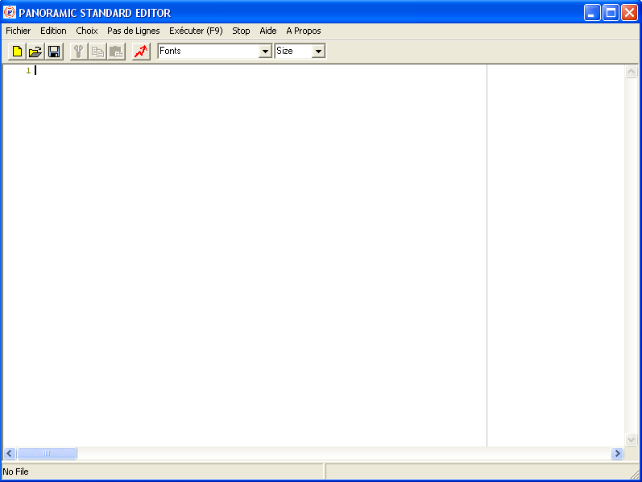
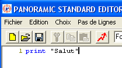
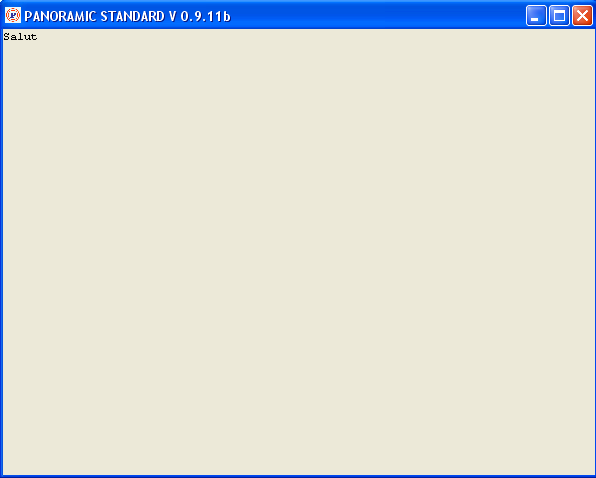
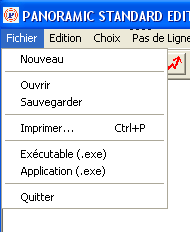
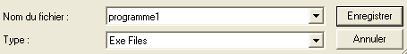

PANORAMIC: PRISE EN MAIN DE L'EDITOR
PAGE PRINCIPALE /PAGE TUTORIELS
A QUOI SERT PANORAMIC_EDITOR?
En gros, avec PANORAMIC_EDITOR, vous pouvez modifier votre code source, l'exécuter et créer un exécutable ou une application.
Vous pouvez :
- Soit créer entièrement votre code source dans PANORAMIC_EDITOR,
- Soit créer votre source avec n'importe quel éditeur ou traitement de texte, l'enregistrer en format texte avec l'extension.bas, puis le charger dans PANORAMIC_EDITOR (commande File / Load),
- Soit récupérer le fichier.bas généré par PANORAMIC_IDE pour le compléter.
Dans tous les cas, vous pouvez le tester en l'exécutant : RUN, ou F9 ou click sur l'icone éclair.
ECRITURE D'UN PETIT PROGRAMME
Pour mettre tout cela en pratique et se faire la main, nous allons écrire un tout petit programme (1 seule ligne) mais qui est un grand classique, auquel les anglo-saxons ont même donné un nom : le "Hello world", qu'on pourrait traduire par "Bonjour tout le monde", et qui constiste à faire imprimer un message de bienvenue.
Pour respecter cette tradition, nous allons donc faire notre "Bonjour tout le monde" avec PANORAMIC.
1 - On lance PANORAMIC_EDITOR.
On obtient cette fenêtre:

2 - On tape une ligne de code.
A côté du 1, il y a un curseur clignotant: c'est là qu'on va taper une ligne de source: print "Salut"
On voit que print est coloré en bleu, cela veut dire que PANORAMIC a compris ce mot, car il fait partie de son vocabulaire.

3 - on exécute le code.
Et
maintenant, on va EXECUTER ce programme.
Pour cela on clique sur l'icone qui représente un éclair rouge.
On obtient une fenêtre dans laquelle il est écrit Salut. Un fenêtre
a été créée et notre print
a fait écrire le texte "Salut" dans cette fenêtre.
Ca y est, on a écrit et exécuté notre premier programme en PANORAMIC.

4 - Création d'un exécutable
On
va même aller un peu plus loin: on va créer un exécutable.
Comme ça, on n'aura plus besoin de
PANORAMIC_EDITOR
pour l'exécuter.
Dans le menu
Fichier, on choisit Exécutable:

Une
fenêtre "Enregistrer sous" apparaît et nous demande de
donner un nom à cet exécutable et d'indiquer où l'enregistrer.
Après
avoir tapé par exemple comme nom de fichier "programme1", et
après avoir choisi l'endroit où le mettre dans l'arborescence
des fichiers du disque dur,
on clique sur le bouton Enregistrer:

On ferme PANORAMIC_EDITOR.
Et on va essayer l'exécutable qu'on vient de créer.
On lance par exemple l'explorateur Windows, on ouvre le répertoire où on vient d'enregistrer ce fichier. On remarque qu'il s'appelle programme1.exe : l'extension .exe a été ajoutée automatiquement pour bien montrer que c'est un exécutable.
On double-clique dessus et, O MIRACLE!, la fenêtre qui contient Salut apparaît.
Cette fois, on a notre premier programme exécutable écrit en PANORAMIC.
Cet exécutable est COMPLETEMENT INDEPENDANT: il n'a besoin de rien d'autre pour s'exécuter. Aucune DLL de quoi que ce soit, aucune bibliothèque. Rien. On double-clique dessus ET C'EST TOUT! On peut le déplacer, le mettre dans un autre répertoire, sur une clé USB, sur un CD-ROM. Dès qu'on veut l'exécuter, on double-clique sur son nom.
Pratique, non?
Mise à jour : 24 septembre 2008